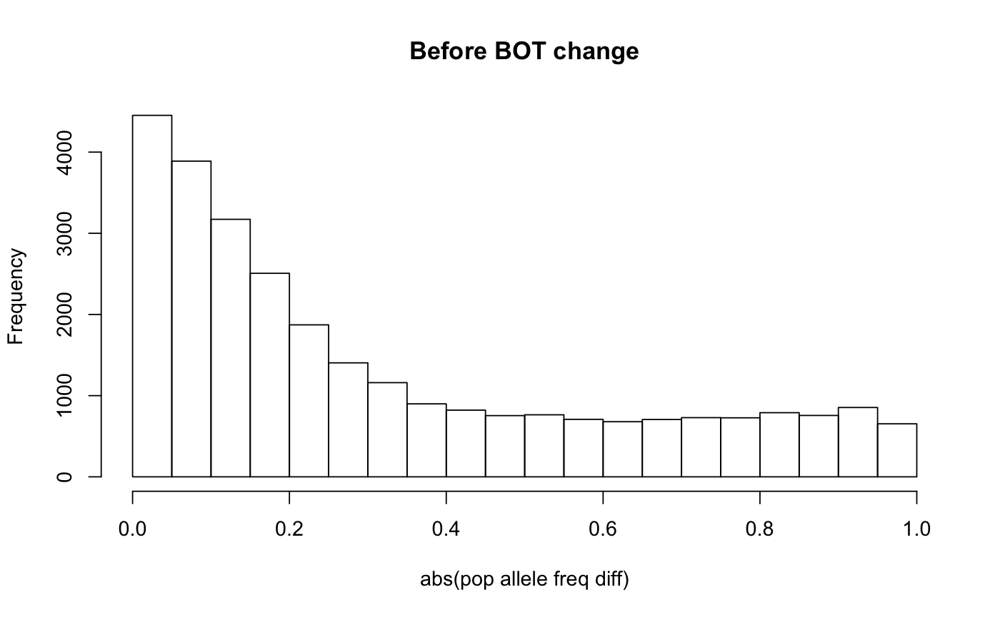
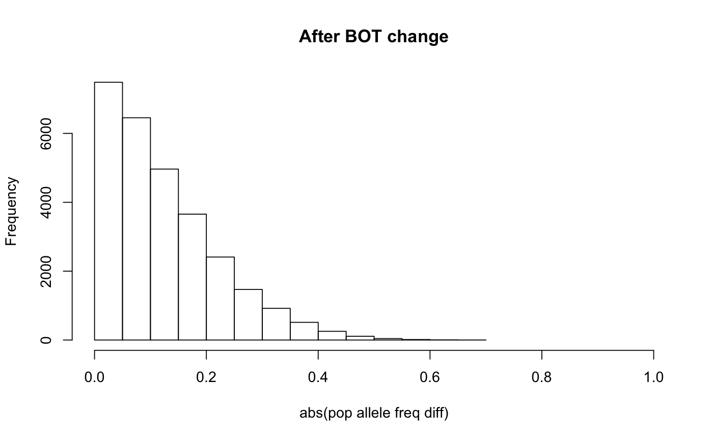

The HapMap allele frequencies in XIBDs HapMap allele frequency files are calculated for the A allele only, where the A allele is determined by the following rules:
When one of the possible variations of the SNP is adenine (A), then adenine is labeled the A allele and the remaining variation is labeled the B allele, regardless of what this might be.
If adenine (A) is not a variation of the SNP but cytosine (C) is, then cytosine is labeled the A allele and the remaining variation is labeled the B allele.
If neither adenine (A) or cytosine (C) are variants of the SNP then thymine (T) is labeled the A allele.
Illuminas convention for the naming of A and B alleles differs to that of the HapMap data
(http://www.illumina.com/documents/products/technotes/technote_topbot.pdf). Rather, the classification
of A and B alleles depend on the top (TOP) and bottom (BOT) designations of the SNP. This
means that the A allele in the HapMap data is not always the same as the A allele in the Illumina data. In
fact, alleles that have been named according to the BOT designation actually correspond the the B allele
in the HapMap data. To correct for this, switchBOTgenotypes() switchs the A and B alleles in
the input genotypes for all SNPs corresponding to BOT designations. This mean a homozygous genotype, 0, will be
changed to a homozygous alternative genotype, 2, and vis versa. Heterozygous genotypes will be unchanged.
NOTE: this function should only be implemented with Illumina SNPchip data when XIBD's HapMap reference data is used
and if there is a noticeable discrepancy between population allele frequencies calculated from the HapMap reference data
and those calculated from the input dataset.
switchBOTgenotypes(ped.genotypes, hapmap.topbot)
| ped.genotypes | a named list containing |
|---|---|
| hapmap.topbot | a data frame containing the Illumina TOP/BOT designation for the HapMap SNPs. This file can be downloaded from http://bioinf.wehi.edu.au/software/XIBD/index.html. This file contains the following 7 columns of information:
where each row describes a single marker. The data frame should contain the header
|
A named list of the same format as the input ped.genotypes with A and B alleles switched for BOT SNPs.
# The following should only be run if you have Illumina data and # are using the HapMap reference data provided by XIBD. # format and filter the data my_genotypes <- getGenotypes(ped.map = example_pedmap, reference.ped.map = example_reference_pedmap, snp.ld = example_reference_ld, model = 2, maf = 0.01, sample.max.missing = 0.1, snp.max.missing = 0.1, maximum.ld.r2 = 0.99, chromosomes = NULL, input.map.distance = "M", reference.map.distance = "M")#> Begin filtering of 10 samples and 28808 SNPs... #> 28808 SNPs remain after merging with reference dataset... #> 28805 SNPs remain after MAF removal... #> 28558 SNPs remain after missingness removal... #> 28297 SNPs remain after LD removal... #> 10 samples remain after missingness removal...# calculate allele frequencies from the input dataset input_freq <- calculateAlleleFreq(ped.genotypes = my_genotypes) hist(abs(my_genotypes[["genotypes"]][,"freq"] - input_freq[,"freq"]), xlim = c(0,1), main = "Before BOT change", xlab = "abs(pop allele freq diff)")# switch alleles my_genotypes_2 <- switchBOTgenotypes(ped.genotypes = my_genotypes, hapmap.topbot = example_hapmap_topbot) # calculate allele frequencies when BOT alleles switched input_freq <- calculateAlleleFreq(ped.genotypes = my_genotypes_2) hist(abs(my_genotypes_2[["genotypes"]][,"freq"] - input_freq[,"freq"]), xlim = c(0,1), main = "After BOT change", xlab = "abs(pop allele freq diff)")